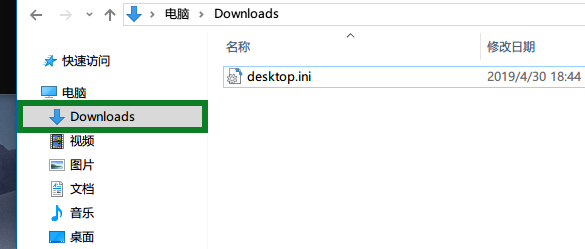
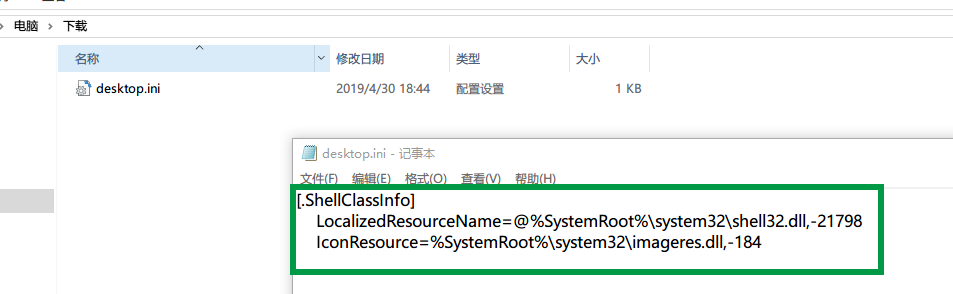
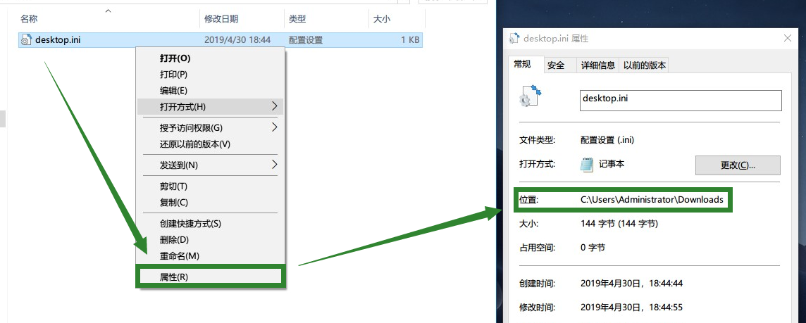
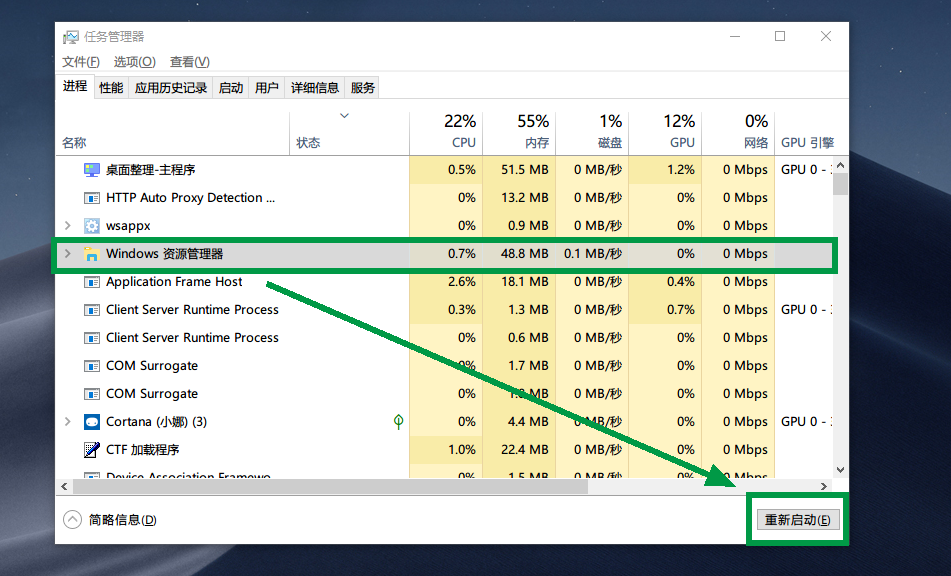
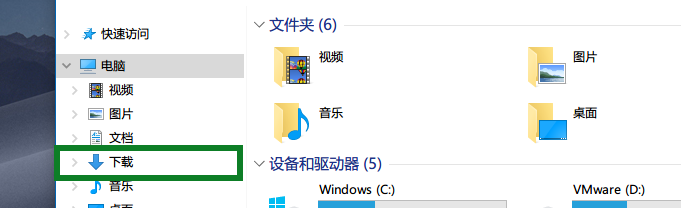

我之前Windows语言用的是English后来改回中文就出现了这个情况，顺带解决一下这个小问题吧。
问题
真的是逼死强迫症系列…
解决
新建desktop.ini
把下面这段代码复制粘贴到记事本，并且保存到【Downloads】目录下。
1 | [.ShellClassInfo] |
命令提示符运行命令
Win + R键打开命令提示符运行下面的指令。
1 | attrib +R C:\Users\Administrator\Downloads\desktop.ini |
如果你不知道文件的路径，你可以这样查看。
重启资源管理器
这就没啥好说的，常规操作。
最后
重新查看就会发现已经恢复正常啦。
